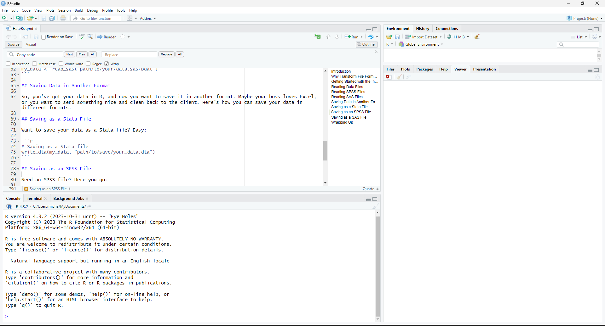

Transforming File Formats for HateRs
Introduction
Welcome to the world of R! If you’re reading this, chances are you’re a bit hesitant about diving into R. Maybe you’ve heard it’s complicated or you’ve already had a frustrating experience. Well, you’re in the right place—let’s make this easy and fun!
First things first, let’s get familiar with RStudio, the tool we’ll use to work with R. Below, you’ll see a screenshot of RStudio. It might look a little overwhelming at first, but don’t worry! The important part for us is the script window, which is where you’ll write your R code. To open a new script, just click on File > New File > R Script. You can write your code there and save it by clicking File > Save or pressing Ctrl + S. Easy peasy!

Now, let‚Äôs get down to business‚Äîtransforming file formats! üï∫
Why Transform File Formats?
Sometimes, data isn’t in the format you need it to be. Maybe it’s in a weird format your boss likes or something a client sent over that makes your eyes cross. Fortunately, R has a handy package called haven that makes reading and saving different file formats a breeze. Whether it’s a Stata .dta file, SPSS .sav file, or SAS .sas7bdat file, it’s got you covered!
Getting Started with the haven Package
First, we need to install the haven package. Packages in R are like apps on your phone—small tools that do specific tasks. To install the package, you just need to type this line of code in your script and run it:
install.packages("haven")Once the package is installed, we need to load it into our R session using the library() function. Think of this like opening the app after you’ve downloaded it:
library(haven)The next time you open RStudio, haven will still be installed, so you only need to use the library command to load it.
Reading Data Files
Let’s say you have some data in a Stata file called data.stata and you want to get it into R. Here’s how you can do it:
# Reading a Stata file
my_data <- read_stata("path/to/your/data.dta")You may notice that have also include a read_dta command. however, there’s no functional difference between the two. In haven, read_dta() is simply an alias for read_stata(). Both commands do exactly the same thing. The two names exist mainly for historical and usability reasons.
That’s it! Let’s try another one:
Reading SPSS Files
Got an SPSS file? No problem:
# Reading an SPSS file
my_data <- read_sav("path/to/your/data.sav")Reading SAS Files
And for you SAS users out there:
# Reading a SAS file
my_data <- read_sas("path/to/your/data.sas7bdat")It’s worth noting that before haven version 1.1.0, released in March 2017, it was unable to open SAS files if they were saved using SAS’s built‐in compression. That shouldn’t be a problem any more, but if you see an error message like this
# Error in sas7bdat::read.sas7bdat(sas_file) :
# file contains compressed datayou will know that you need to decompress the SAS file in SAS before you can open it in R.
data out.my_sas_data;
set out.my_sas_data;
compress = off;
run;Then everything should work as expected.
Some of haven’s Most Useful Options
When working with data files—especially large ones—you often don’t need every single column or row loaded into your R session. This is where haven’s options like col_select, skip, and n_max become incredibly useful. They give you finer control over the data import process, making your workflow more efficient and your code more purposeful. Let’s break down what each option does and see a few examples in action.
col_select The col_select option lets you specify exactly which columns to import from your dataset. This is particularly beneficial when:
skip Sometimes data files include rows at the beginning that aren’t part of the actual dataset—maybe they contain metadata, comments, or headers that aren’t structured as data. The skip option allows you to tell haven to ignore a specified number of rows at the start of the file.
n_max When exploring a new dataset or working with very large files, you might only want to import a subset of the data to get a feel for its structure and content. The n_max option sets an upper limit on the number of rows to read.
Below is a simple example in R that demonstrates how to use these options when reading a SAS file with haven:
library(haven)
# Suppose we have a SAS dataset 'data.sas7bdat' and we want to:
# - Read only the columns: age, income, and gender.
# - Skip the first 2 rows (perhaps they contain metadata or non-data info).
# - Limit our import to the first 100 rows for a quick preview.
data_preview <- read_sas("data.sas7bdat",
col_select = c(age, income, gender),
skip = 2,
n_max = 100)
# Display the first few rows of the resulting data frame
head(data_preview)col_select = c(age, income, gender) tells haven to include only those three variables. skip = 2 instructs it to bypass the first two rows. n_max = 100 ensures that only 100 rows are read, which is perfect for an initial data exploration.
By using these options:
- You Gain Speed: Loading only necessary parts of your data speeds up your workflow, particularly useful when dealing with large files.
- You Save Resources: Less memory is consumed, which is ideal when working in environments with limited resources.
- You Enhance Clarity: Your code explicitly shows which parts of the dataset you need, making it easier for others (and your future self) to understand your workflow.
Saving Data in Another Format
So, you’ve got your data in R, and now you want to save it in another format. Maybe your boss loves Excel, or you want to send something nice and clean back to the client. Here’s how you can save your data in different formats:
Saving as a Stata File
Want to save your data as a Stata file? Easy:
# Saving as a Stata file
write_dta(my_data, "path/to/save/your_data.dta")Saving as an SPSS File
Need an SPSS file? Here you go:
# Saving as an SPSS file
write_sav(my_data, "path/to/save/your_data.sav")Saving as a SAS File
And if you need to go back to SAS:
# Saving as a SAS file
write_sas(my_data, "path/to/save/your_data.sas7bdat")Wrapping Up
And there you have it—reading and saving data in different formats using the haven package in R! It might seem like a lot at first, but with just a few lines of code, you can easily transform your data files into the format you need. Remember, every expert was once a beginner, and you’re already on your way. So keep going, and don’t hesitate to try new things in R. You’ve got this!
Happy coding! üéâ